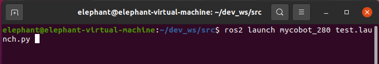
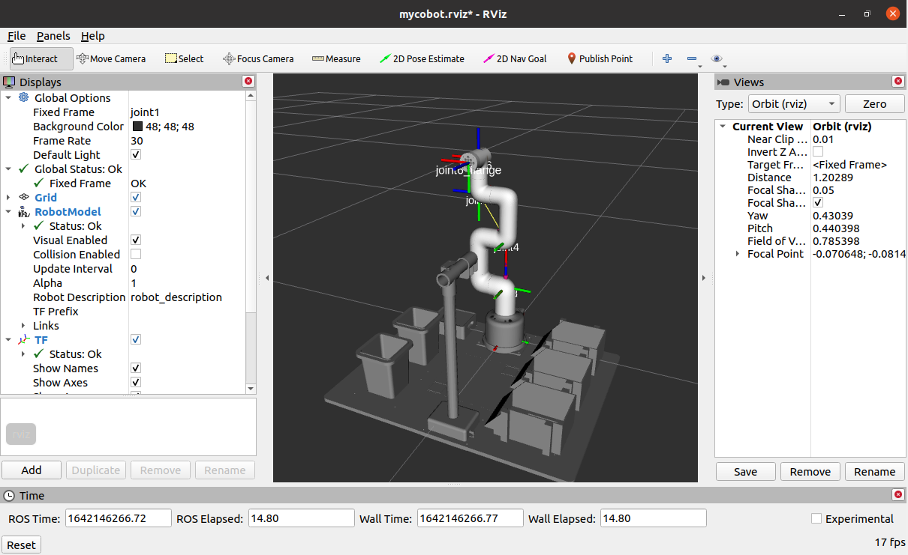

rviz2的简单介绍及使用
rviz是ROS中一款三维可视化平台，一方面能够实现对外部信息的图形化显示，另外还可以通过 rviz 给对象发布控制信息，从而实现对机器人的监测与控制。
rviz2的简介
ros2安装成功表明rviz2也一起安装成功了，因为ros2的安装包含了rviz2。
打开一个一个新的终端(快捷键Ctrl+Alt+T)输入命令打开rviz2
rviz2
打开rviz2,显示如下界面：

各个区域介绍
- 左侧为显示器列表，显示器是在3D世界中绘制某些内容的东西，并且可能在显示列表中具有一些可用的选项。
- 上方是工具栏，允许用户用各种功能按键选择多种功能的工具
- 中间部分为3D视图: 它是可以用三维方式查看各种数据的主屏幕。3D视图的背景颜色、固定框架、网格等可以在左侧显示的全局选项（Global Options）和网格（Grid）项目中进行详细设置。
- 下方为时间显示区域，包括系统时间和ROS时间等。
- 右侧为观测视角设置区域，可以设置不同的观测视角。
本部分我们只进行粗略的介绍，如果您想了解更多详细的内容，可以前往用户指南进行查看。
mycobot_ros2安装与更新
请查看 ROS2的安装 章节末尾。
简单使用
通过launch.py文件启动
本例子建立在您已经完成环境搭建，并成功将本公司的代码从GitHub上复制下来的基础上。
打开一个控制台终端(快捷键Ctrl+Alt+T) 输入一下命令进行ROS2的环境配置。
cd ~/colcon_ws
colcon build --symlink-install
source install/setup.bash
再输入：
- mycobot 280-M5版本：
ros2 launch mycobot_450 test.launch.py

打开rviz2，并得到如下结果：

如果您想了解更多rviz的相关资料信息，您可以前往官方文档进行查看
mycobot pro 450版本前提条件
450系列rviz使用指南
机械臂的控制
滑块控制
打开一个命令行，运行：
模型跟随
GUI 控制
键盘控制
末端执行器
- 支持的末端执行器： myCobot垂直吸泵V2.0、摄像头法兰
- 适用设备： myCobot 280 M5、myCobot 280 PI、myCobot Pro 450
myCobot垂直吸泵V2.0
加载模型
滑块控制
注意：该功能仅支持对机械臂的控制
打开一个命令行，运行：
3 GUI控制
在前面的基础上，本包还提供了简单的 Gui 控制界面。 该方式意在于真实机械臂相互联动，请连接 mycobot。
打开命令行：
摄像头法兰
加载模型
打开一个命令行，运行：
滑块控制
注意：该功能仅支持对机械臂的控制
打开一个命令行，运行：
5.3 摄像头法兰 && 吸泵
1 加载模型
打开一个命令行，运行：
URDF模型地址
1 myCobot 垂直吸泵V2.0
-
2 摄像头法兰